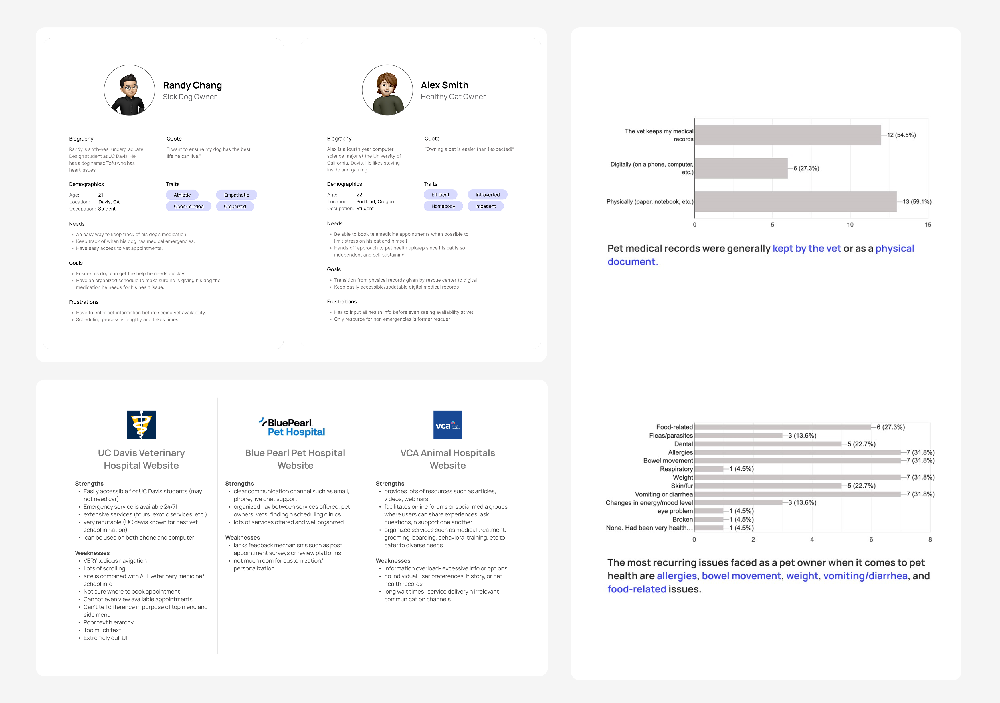
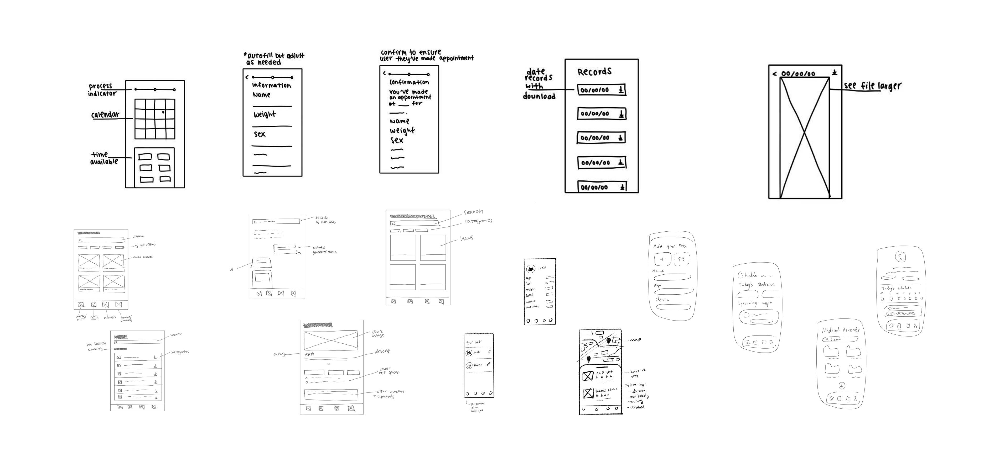
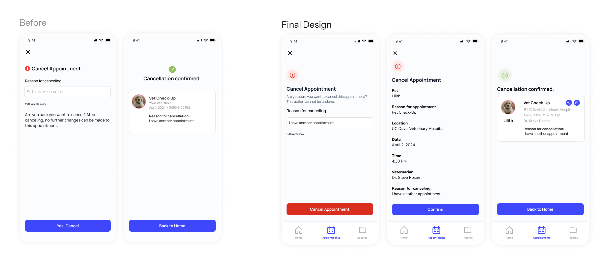
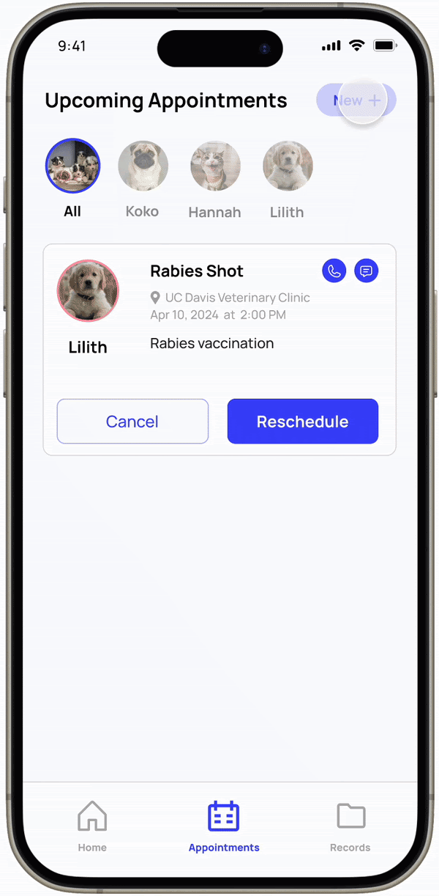
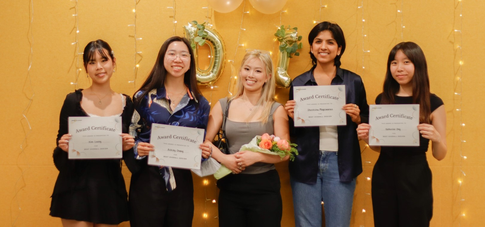

Pet Pulse is a mobile pet healthcare app that ensures the best care for pets by allowing pet owners to instantly schedule appointments, communicate with veterinary services, and manage their pet's medical records.
Award: Best Overall Design
Role
UX design, visual and interaction design, prototyping
Duration
6 weeks
Tools
Figma, Notion
Team
Design Interactive Pet Health Team
The problem.
In addition to worrying about their pet's health, the toll of scheduling appointments and archiving necessary medical documents can be overwhelming for pet owners. Arranging an appointment can be stressful, as pet owners either have to hope the animal hospital answers their call or endure a tedious, form-filling process online. The anxiety of their pet's illness can overshadow the vital task of filing papers for the veterinarian visits and reference.
In 6 weeks, I underwent rapid design solutioning to deliver an app solving for health information management overwhelm.
User research.
Competitive analysis was conducted to identify features current animal hospitals offer and establish a benchmark. Alongside this, surveys were sent to pet owners to better understand the situations they experience when managing their pet's health, as well as issues they face when scheduling appointments. I created user personas as a reference for alignment with user needs when making future design decisions.

Comparative analysis, user personas, interviews, and survey data
Low fidelity brainstorm.
Sketches were used for user validation. Moving quickly from low to high fidelity kept the project on time.

✋ Pause!
My team and I had difficulty narrowing the project scope due to the broadness of pet healthcare. Therefore, I prioritized solutions of information management and appointment scheduling, which aligned with the needs of pet owners as stated on the user personas.
Rapid iteration.
User testing identified friction in the design, while A/B testing validated the design resonated with users. Efficient iterative testing allowed for further usability and user flow refinement.

The design.
Here are the features on overcoming cognitive overload through centralized access to medical information and records:
Overview of your pet
Access your pet's medical history, manage veterinarian appointments, and learn about medical terms related to your pet.
Medical records
Medical records uploaded by yourself or the veterinarian compiled in one place.
To address user's stress, we incorporated easy messaging and appointment scheduling systems:
Messaging
Quick communication with veterinarians reduces the need for calling or emailing the hospital.
Scheduling
Book an appointment, with pet and personal details auto-filled out, for a stress-free experience.

Presenting to the panel.
My team and I were judged by Neha Deshmukh, a UX Designer at Amazon. Her feedback was incredibly valuable, emphasizing our research strengths and guiding us to refine problem definition when implementing educational aspects of the app. After presenting to a panel of 4 other judges, my team and I won the Best Overall Design Award out of our cohort.

Takeaways.
Narrowing the scope
In the ideation phase of this project, I had difficulties identifying the design's purpose. Healthcare is a broad category, and our team could tackle different aspects of the topic. By continuously revisiting and focusing on the results from the surveys and interviews, I established a clearer direction for the app.
Team communication
With a broad topic and 6-week deadline, communication between team members was important throughout the design process. My team and I made sure to discuss our action items and progress during meetings to ensure everyone was aligned with the project's direction and goals.